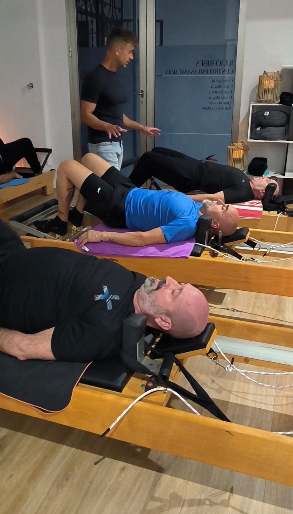
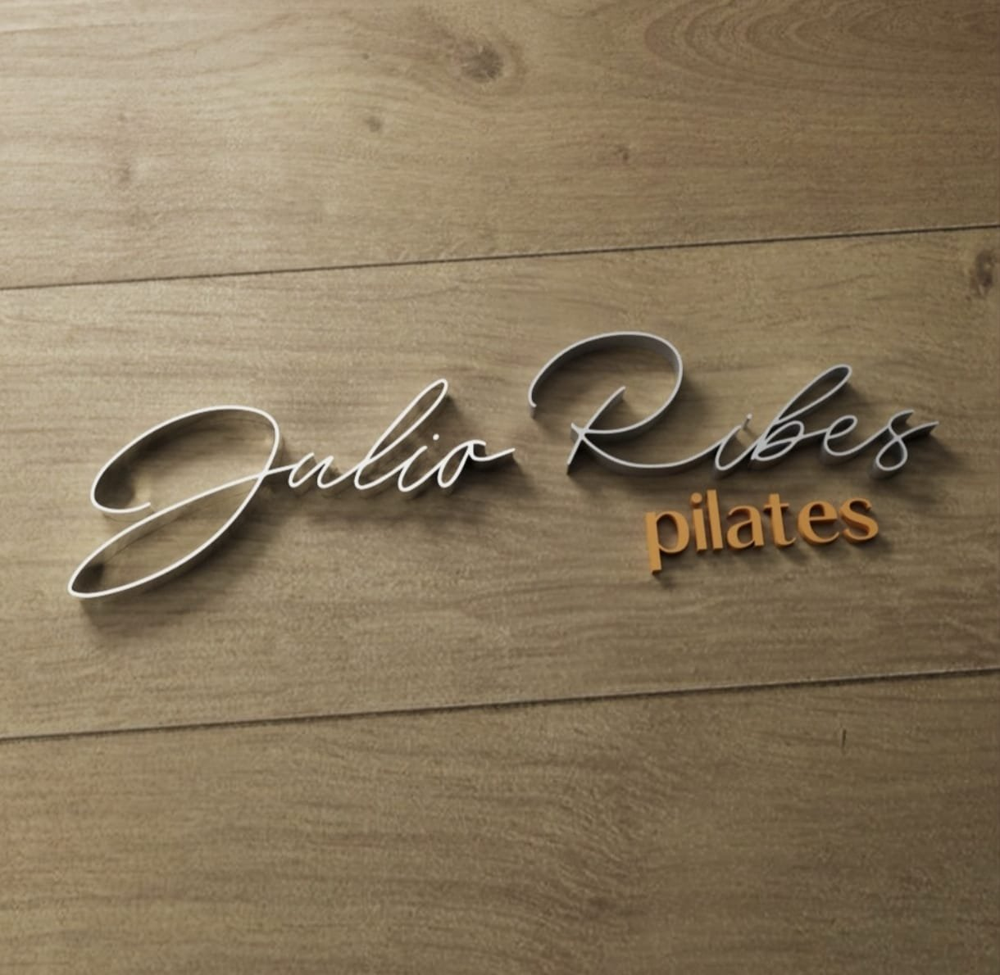
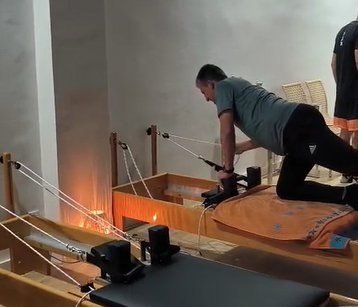
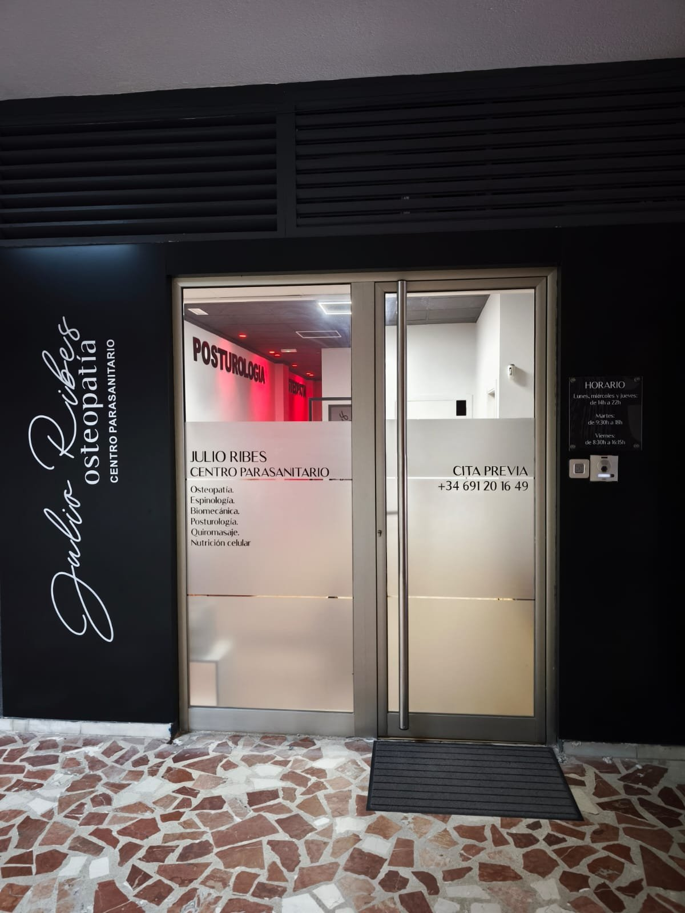
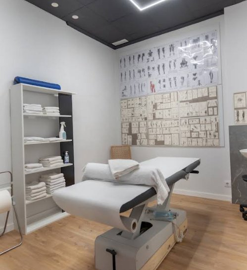
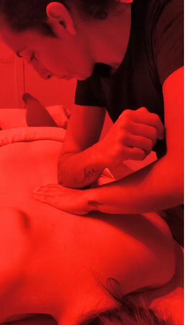

Centro de Osteopatía
y Pilates Julio Ribes
Osteopatía y Pilates en Gandía: disciplina de salud manual que valora el cuerpo de forma global y busca el origen de las molestias, no solo el síntoma, mediante técnicas manuales que trabajan la movilidad de los tejidos e integran cuerpo, movimiento y hábitos cotidianos.



Un lugar pensado para escuchar tu cuerpo
En el centro se combinan la osteopatía y el Pilates con una atención cercana y personalizada. Cada persona recibe un trabajo adaptado a sus necesidades, con tiempo para escuchar, comprender y acompañar.
Osteopatía
Un abordaje manual que busca el origen del problema, no solo el síntoma.
Pilates
Clases con máquinas, adaptadas a cada persona y en grupos reducidos.
Atención personalizada, de verdad
El objetivo es entender qué te ocurre y darte herramientas prácticas para tu día a día. Grupos reducidos, seguimiento cercano y confianza en cada paso del proceso.
- 01 Conversamos sobre tu historia, tus hábitos y lo que sientes.
- 02 Valoramos tu cuerpo para comprender el origen del problema.
- 03 Diseñamos un abordaje adaptado a ti, con osteopatía y movimiento.
El espacio



Lo que dicen quienes ya pasaron por aquí
Sobre el centro y la osteopatía
¿Qué es la osteopatía?
Una disciplina de salud manual que valora el cuerpo de forma global y busca el origen de las molestias, no solo el síntoma, mediante técnicas que trabajan la movilidad de los tejidos.
¿Qué es el Pilates con máquinas?
Un método de trabajo corporal sobre equipos como el reformer, que permite adaptar la resistencia y el apoyo a cada persona. En el centro se imparte en grupos reducidos.
¿Hace falta prescripción médica para acudir?
No. La osteopatía no requiere prescripción médica para acudir a una sesión.
¿Cuándo acudir al osteópata?
Ante dolor o limitación de movimiento, molestias recurrentes, tensión acumulada o como parte del cuidado y la prevención. En la primera visita valoramos tu caso y diseñamos un abordaje adaptado.
¿Qué horarios tiene el centro?
Consulta disponibilidad y horarios por WhatsApp o llamando al 691 20 16 49; te ayudamos a encontrar tu hueco.
¿Cómo llegar al centro?
Estamos en Carrer Ferrocarril d'Alcoi, 26, 46701 Gandia, dentro del pasaje. Puedes abrir la ubicación en Google Maps desde el botón «Cómo llegar».
Estamos en Gandía
- Carrer Ferrocarril d'Alcoi, 26, 46701 Gandia, Valencia(dentro del pasaje)
- 691 20 16 49